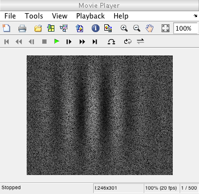
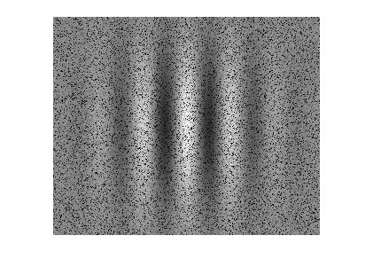

t_eyemovementCompute
This script goes over how to take a simple scene and compute the photoisomerizations in the cone mosaic incorporating the eye movement object.
7/14/15 xd wrote it
Contents
Init
ieInit;
Create a scene and optical image
% Define a harmonic scene for this tutorial. fov = 2; params.freq = 6; params.contrast = 1; params.ph = 0; params.ang = 0; params.row = 256; params.col = 256; params.GaborFlag = 0.2; % standard deviation of the Gaussian window % Set up scene and oi scene = sceneCreate('harmonic', params); scene = sceneSet(scene, 'h fov', fov); oi = oiCreate('human'); oi = oiCompute(scene, oi);
Set up sensor with eye movements
% Create the eye movement object em = emCreate; % Create the sensor % We want to set the exposure time equal to our eye movement time. In this % case (the default), the eye movement frames each represent 1 ms. % Therefore, the exposure time should also be 1 ms. sensor = sensorCreate('human'); sensor = sensorSetSizeToFOV(sensor, fov, scene, oi); sensor = sensorSet(sensor, 'eyemove', em); sensor = sensorSet(sensor, 'positions', zeros(500, 2)); % This is for 500 ms sensor = sensorSet(sensor, 'exp time', 0.001); sensor = sensorSet(sensor, 'time interval', 0.001); % Magnify the amplitude to get a better visualization later amp = emGet(em,'tremor amplitude'); em = emSet(em,'tremor amplitude',10*amp); sensor = sensorSet(sensor,'eye movement',em); sensor = emGenSequence(sensor);
Compute and show isomerizations
% Cone absorptions will make use of the positions generated by the eye % movement object to calculate the isomerizations. sensor = coneAbsorptions(sensor, oi); photons = sensorGet(sensor, 'photons'); implay(photons/max(photons(:))); % Compare this with a static sensor staticSensor = sensorCreate('human'); staticSensor = sensorSetSizeToFOV(staticSensor, fov, scene, oi); staticSensor = coneAbsorptions(staticSensor, oi); staticPhotons = sensorGet(staticSensor, 'photons'); figure; imshow(staticPhotons/max(staticPhotons(:))); 